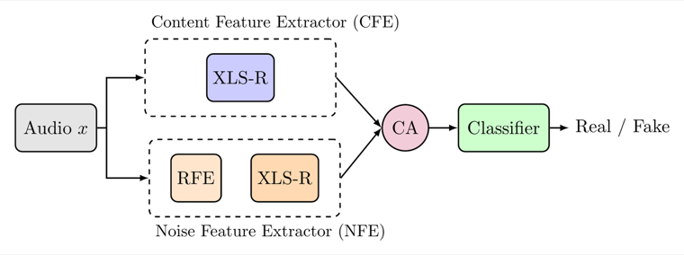

SONAR: Spectral-Contrastive Audio Residuals for Generalizable Deepfake Detection
International Conference on Machine Learning (ICML), 2026
Neural networks preferentially learn low frequencies, which both leaves high-frequency artifacts in generated audio and leaves those artifacts under-exploited by common detectors. SONAR is a dual-path framework that learns data-driven SRM-style filters to isolate high-frequency residuals and uses a Jensen–Shannon contrastive objective to pull real content/noise pairs together and push fake pairs apart in latent space, yielding strong generalization to unseen generators.
@inproceedings{hidekel2026sonar,
title = {SONAR: Spectral-Contrastive Audio Residuals for Generalizable Deepfake Detection},
author = {Hidekel, Ido Nitzan and Lifshitz, Gal and Cohen, Khen and Raviv, Dan},
booktitle = {Proceedings of the International Conference on Machine Learning (ICML)},
year = {2026}
}